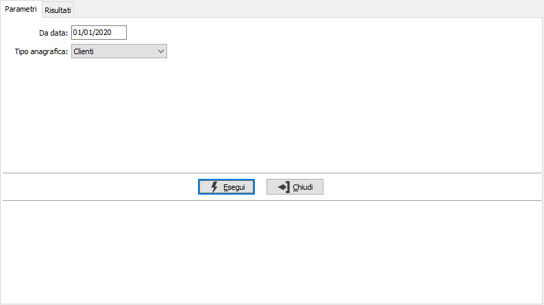
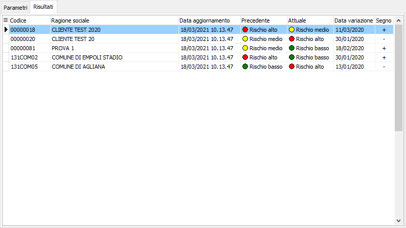

Analisi variazioni semafori
La procedura consente di analizzare le variazioni semaforiche relative alle anagrafiche intercorse a partire da una certa data; tramite la casella tipo anagrafica è possibile analizzare clienti, fornitori, clienti provvisori o fornitori provvisori.

La pagina dei risultati riporta le variazioni per ogni codice mostrando la data di aggiornamento il valore del semaforo precedente ed attuale, la data in cui è avvenuta la variazione ed il segno.

Dalla pagina Risultati, tramite i pulsanti presenti nella Toolbar sarà possibile effettuare la stampa.